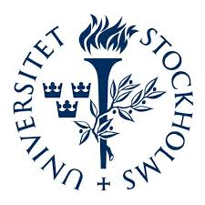

Sponsors and Partners
Funders

Additional sponsors will be added here.
July 19, 2027 – July 30, 2027
Makerere University, Kampala, Uganda
Scientific Officer: Ulrich Kramer
The CIMPA School on Algebraic and Enumerative Combinatorics will take place from July 19 – July 30, 2027 at Makerere University in Kampala, Uganda. The school aims to introduce graduate students and early-career researchers to modern developments in enumerative and algebraic combinatorics and their connections to other areas of mathematics and computer science.
While combinatorics research is still developing in Uganda and parts of Africa, there is a growing community of researchers and students interested in the subject.
This school aims to strengthen this community by bringing together international experts and young researchers from Africa and beyond. Participants will gain a solid foundation in key topics of algebraic and enumerative combinatorics through a series of lecture courses, exercise sessions, and collaborative discussions.
The school builds on the momentum created by recent combinatorics schools in Africa and the activities of the African Enumerative Combinatorics Community (AECC).
The CIMPA School is a joint event organized collaboratively by Mbarara University of Science and Technology (MUST) , Stockholm University and Makerere University in Kampala.
We introduce the space of symmetric functions and the most common bases for this space. We prove several formulas formulas for the Schur functions as well as give combinatorial interpretations for some of the transition matrices between the different bases (Kostka coefficients and the Murnaghan--Nakayama rule). This part also builds on the Lindström-Gessel- Viennot lemma (introduced earlier in the school). Given time, we also discuss the famous RSK-algorithm and the Littlewood-Richardson coefficients, methods for proving Schur positivity, and connection with quasisymmetric functions.
In this course we will discuss polynomials, recursions, and q- analogs: connecting the enumerative combinatorics background in the first week to algebraic concepts that will be discussed during the second week. Polynomials can be used to capture a number of algebraic graph invariants, we will focus on the chromatic polynomial and the Tutte polynomial. Recursive relationships can be used to describe these polynomials and these will be explored. Then, we will discuss q-analogs and how they can be used to perform refined enumeration.
We explore the definition of partial orders and lattices based on some famous examples from combinatorics such as the weak order on permutations and the Tamari lattice. We explore specific properties (distributivity, demi-distributivity, congruence uniform) and operations (sublattices and lattice quotient).
When exact counting formulas are not available, one often uses analytic tools to obtain approximate and asymptotic solutions to various combinatorial problems. This course provides an introduction to asymptotic analysis and its use in the context of combinatorics. Important techniques from real analysis (e.g., Laplace's method or the Euler-Maclaurin formula) and complex analysis (e.g., singularity analysis and the saddle point method) will be presented and illustrated with topical examples from enumerative combinatorics.
This course provides a foundational introduction to enumerative combinatorics. Core topics include basic counting principles (sum and product rules), permutations and combinations, the inclusion–exclusion principle, recurrence relations, generating functions, partitions, and bijective proofs. Selected advanced topics such as Catalan numbers, and Stirling and Bell numbers may also be introduced.
This course focuses on combinatorial techniques used to solve problems in graph theory, design theory, and combinatorial optimization.
Matroids show up several times in the undergraduate curriculum, but most of us don’t know them by name. In 1933, three Harvard junior-fellows tied together some recurring themes in mathematics, into what Gian Carlo Rota called one of the most important ideas of our day. They were finding properties of dependence in multiple mathematical structures. What resulted is the matroid, which abstracts notions of algebraic dependence, linear independence, and geometric dependence, thus unifying several areas of mathematics. The usefulness of matroids to pure mathematical research is similar to that of groups – by studying an abstract version of phenomena that occur in different realms of mathematics, we learn something about all those realms simultaneously. We find that matroids are everywhere: Vector spaces are matroids; We can define matroids on a graph. Matroids are useful in situations that are modelled by both graphs and matrices. Yet many matroids cannot be represented by a graph nor a collection of vectors over any field. We consider the essential role of matroids in combinatorial optimization. No prior knowledge of matroids or graphs is needed.
The course aims to introduce classical algebraic enumeration methods, with examples of combinatorial structures that are relevant in disciplines such as computer science and biology. Topics include bijections, symbolic method, various types of generating functions, Lagrange inversion, and Pólya’s enumeration method. Students will learn to apply these methods to enumerate combinatorial structures such as permutations, trees, tanglegrams, directed graphs, and more.
This course will serve as an introduction to determinental methods in combinatorics, which play an important rôle in enumerative combinatorics, in particular in graph theory and its connections with physics. After recalling some properties of the determinant in the context of graph theory, in particular how to count walks in graphs, we will start with the famous matrix-tree theorem of Kirchoff, relating the number of spanning trees with a determinant formula, and some of its generalisations due notably to Tutte and motivated by the conductance of electrical networks. We will then introduce the Lindström-Gessel-Viennot lemma, which generalises the matrix- tree theorem in the sense that it allows us to count walks in directed graphs using a determinant. And we will briefly discuss the deep connections of this method with some statistical physics models. Finally, we will present Kasteleyn's theorem and how a determinant formula due to Cayley allows us to compute the number of perfect matchings in planar graphs, and in what way this question is related to the dimer and the Ising models in statistical physics.
The school will consist of lecture courses, exercise sessions, and collaborative discussions in algebraic and enumerative combinatorics. The detailed lecture timetable will be updated closer to the school.
The school spans 10 working days (19–30 July, weekends excluded). Four courses run each week, each comprising 4–6 hours of lectures and accompanying exercise sessions.
Course abbreviations:
IEC – Intro Enumerative Combinatorics;
AEM – Algebraic Enumeration Methods;
DE – Determinants in Enumeration;
AE – Asymptotic Enumeration;
IAC – Intro Algebraic Combinatorics;
SF – Symmetric Functions;
PO – Partial Orders & Lattices;
MAT – Matroid Theory.
| Time | Monday | Tuesday | Wednesday | Thursday | Friday |
|---|---|---|---|---|---|
| 09:00–10:30 | Opening; IEC | AEM | AEM | DE | AE |
| 10:30–10:50 | Coffee Break | ||||
| 10:50–12:20 | IEC; DE | AEM; IEC | AEM; Ex: AEM | DE; AE | AE; Ex: DE |
| 12:20–12:30 | Student Talk | ||||
| 12:30–14:00 | Lunch | ||||
| 14:00–15:00 | DE | IEC | Open Problems | AE | CIMPA; Careers |
| 15:00–15:30 | Coffee Break | ||||
| 15:30–17:40 | Ex: DE; Ex: IEC | Ex: IEC; Ex: AEM | Free / Open Problems | Ex: AE; Ex: DE | Discussion; Closing |
| 17:40–19:30 | Dinner | ||||
| Evening | Common rooms | Common rooms | Online presence | Common rooms | Common rooms |
Weekend: Saturday excursion. Sunday free.
| Time | Monday | Tuesday | Wednesday | Thursday | Friday |
|---|---|---|---|---|---|
| 09:00–10:30 | IAC | SF | SF | MAT | PO |
| 10:30–10:50 | Coffee Break | ||||
| 10:50–12:20 | IAC; MAT | SF; IAC | SF; Ex: SF | MAT; PO | PO; Ex: PO |
| 12:20–12:30 | Student Talk | ||||
| 12:30–14:00 | Lunch | ||||
| 14:00–15:00 | MAT | IAC | Open Problems | PO | Discussion; Closing |
| 15:00–15:30 | Coffee Break | ||||
| 15:30–17:40 | Ex: MAT; IAC | Ex: IAC; Ex: SF | Free | Ex: MAT; Ex: PO | Presentations |
| 17:40–19:30 | Dinner | ||||
| Evening | Common rooms | How to do research | School dinner | Common rooms | Free |
Applications will open soon. Interested graduate students and early-career researchers are encouraged to apply.
Application form: (registration link will appear here)
Application deadline: March 5, 2027
Food and accommodation will be provided for all accepted participants. Limited travel support will be available for participants from developing countries.
We strongly encourage applications from women and individuals from underrepresented groups in mathematics.
The list of accepted participants will be published here after the selection process.

Additional sponsors will be added here.